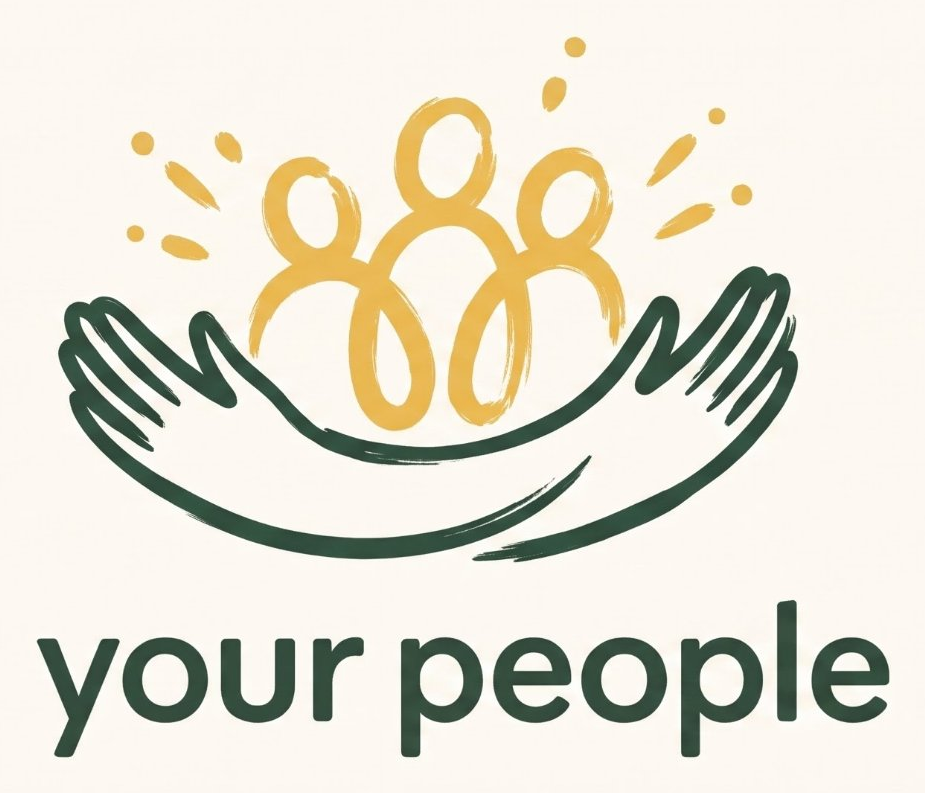
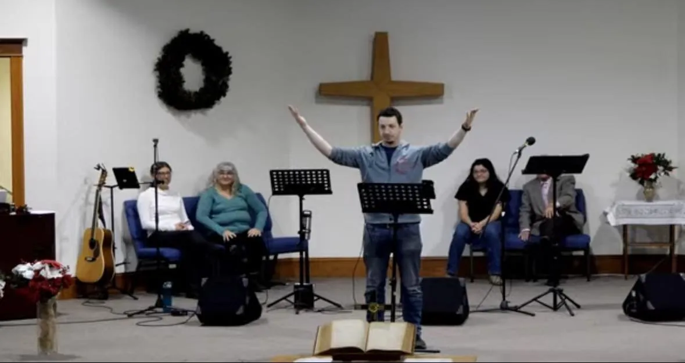

Your People gives a whole congregation one simple, personal home — made from your own church, not a template with your name pasted in.
No separate apps for the directory, the announcements, the calendar and the prayer chain. One place, everyone in it, nothing extra.

yourpeople.church/yourchurch — with your service times, your welcome, and your way in. It builds itself from your church in the app; leaders shape it from the church desk.
This is Your People as one church sees it — Riverview Baptist, our sample church. Tap the tabs at the bottom of the phone to walk through the app, and try the “I’m coming” button while you’re there.
Every church’s app wears its own name and colours, drawn from the church itself — this one wears Riverview’s.
Your People is in testing now, and testers shape what it becomes. Pick your phone:
iPhone testing is with Apple for its review right now. This page will carry the join link as soon as it clears — it should only be a short wait.
1. Join the Bekmas Testers group — anyone can join.
2. Open the Your People testing page and tap Become a tester.
3. Install Your People from the Play Store.
Use the same Google account for all three steps — that is the part people miss.
Last updated: November 11, 2026
The short version: we collect account details, the content your church posts, and — only if you choose to be listed — the directory details you add yourself. Nothing is sold, there are no ads and no advertising trackers, and member content never appears on a public page.